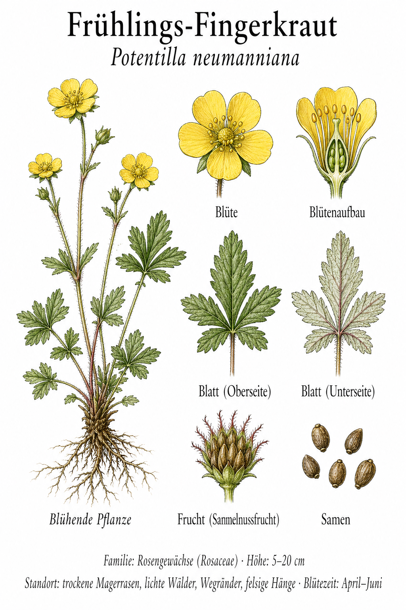

Gold auf mageren Böden – und ein Zeiger für seltene Trockenrasen.


Der Trockenrasen – Europas artenreichstes Biotop
Trockenrasen gehören zu den artenreichsten Lebensräumen Europas – auf einem einzigen Quadratmeter können über 40 Pflanzenarten wachsen. Das Frühlings-Fingerkraut ist dort zuhause. Durch Aufforstung, Verbrachung und Düngung sind über 80% der mitteleuropäischen Trockenrasen verschwunden. Wo das Frühlings-Fingerkraut noch wächst, lohnt es sich genau hinzuschauen.
Fünf Blütenblätter – die Rosenformel
Fünf gelbe Blütenblätter, viele Staubblätter, Früchtchen ohne Kelchbecher – das ist die Grundformel der Rosengewächse (Rosaceae). Das Frühlings-Fingerkraut gehört dazu, ist also verwandt mit Erdbeeren, Himbeeren, Rosen und Kirschen. Wer die Rosenformel kennt, erkennt Fingerkräuter sofort als Familienmitglieder.
Wissenswertes & Merksätze
Zeigerpflanze der Trockenrasen
Sein Vorkommen signalisiert magere, kalkreiche Böden und ungestörte Wiesenstrukturen – ökologisch wertvoller als Düngungsindikator.
Rosengewächse
Verwandt mit Erdbeere, Himbeere und Rose – die fünf gelben Blütenblätter und vielen Staubblätter sind das Familienerkennungszeichen.
Ausläufer-Strategie
Das Frühlings-Fingerkraut breitet sich per Ausläufer aus – vegetative Vermehrung als Ergänzung zur Samenverbreitung.